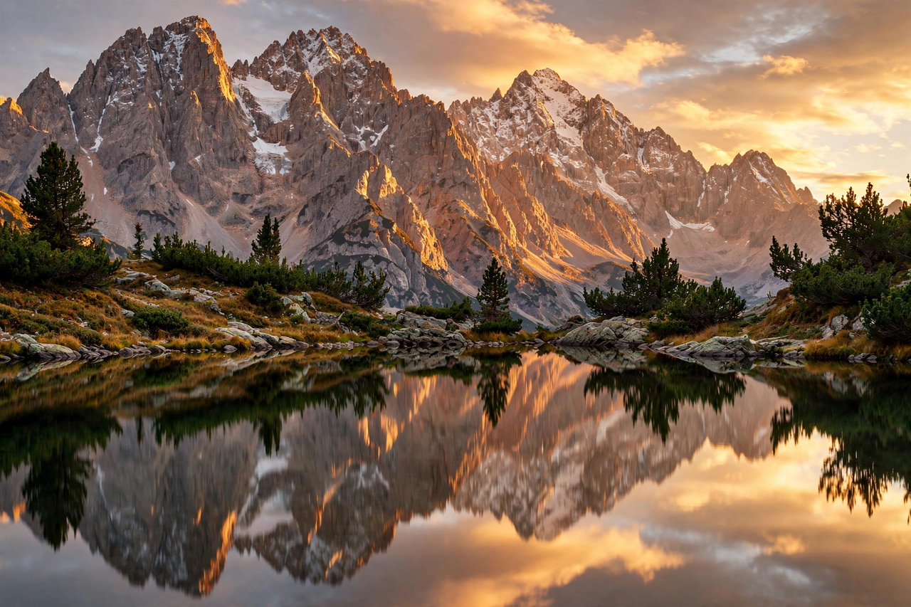

Welcome to Wikimedia Commons — a repository of free-use images, sounds, videos and other media files. Its contents can be used by Wikipedia and by everybody else, for any purpose, under free licences. The repository now holds well over one hundred million files.

[Image: Featured photograph of the day — a landscape / nature photograph, as shown in the Picture of the Day box on the Commons main page]
Picture of the Day
The main page highlights a Picture of the Day — one of Commons' Featured Pictures, chosen for its quality and encyclopaedic value — together with a caption and links to the file page and its author.
Media of the Day
A Media of the Day box presents a freely licensed audio or video file, such as a nature recording, a historical film clip or an animation.
Browse by category
Media are organised by topic: Nature, Animals, Plants, Architecture, Art, Maps, Science, Technology, Food and drink, People, and Sound, among many others. You can also browse by location, by licence and by source.
Participate
Anyone can upload their own photographs and media, take part in the Featured Pictures and Picture of the Year votes, help categorise and describe files, and improve captions in many languages.
Highlights
Collections include Featured, Quality and Valued images, along with media supplied by cultural institutions and archives through partnerships with libraries, museums and galleries.